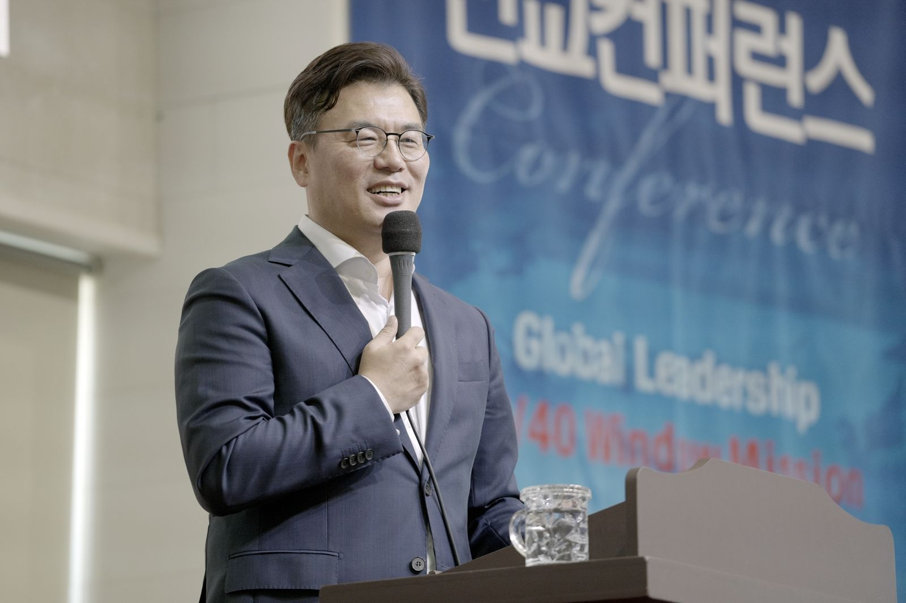
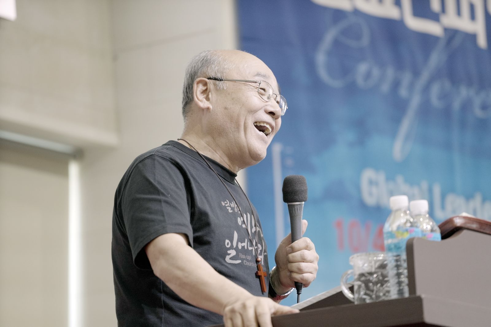
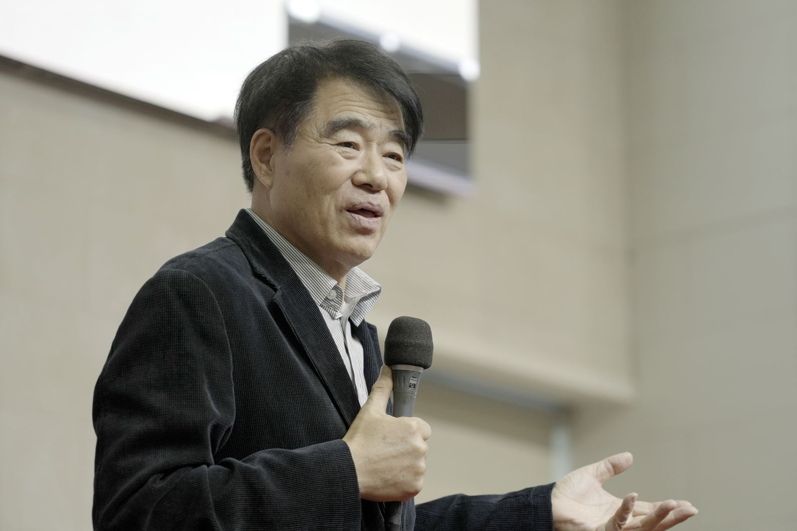
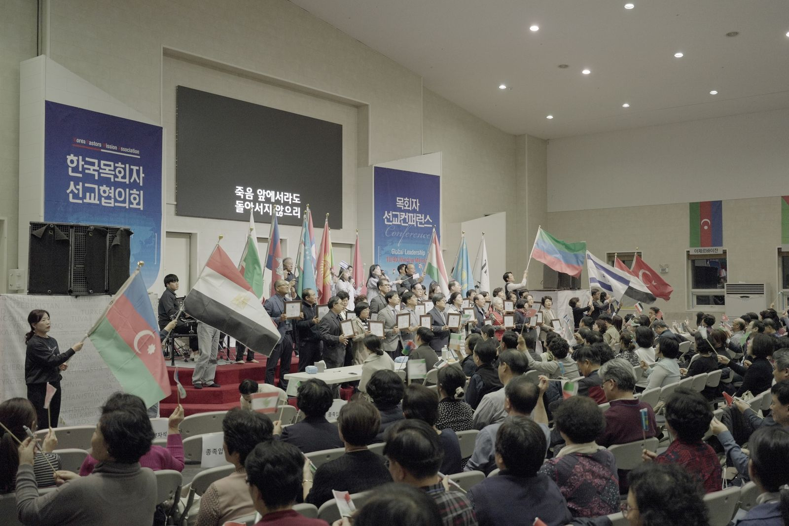
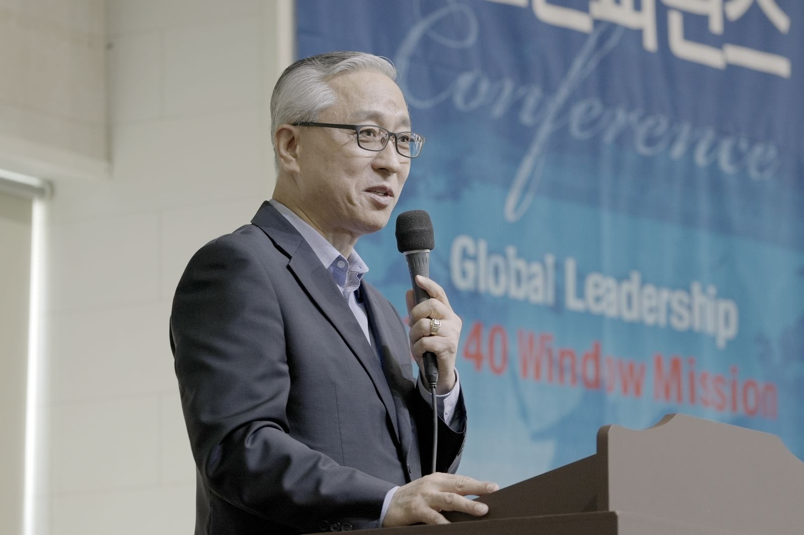

The 17th Pastors’ Mission Conference, hosted by the Korea Pastors’ Mission Association (KPMA), was held on October 23 at the BTJ Nations Center in Sangju, North Gyeongsang Province. Its aim was to help the Korean church understand world missions strategically.
About 400 people attended, including pastors from Korea and abroad and members of KPMA. The speakers were Rev. Kim Sang-bok, pastor emeritus and co-chair of the World Holy City Movement; Missionary Paul Choi, head of InterCP; Rev. Lee Gyu, senior pastor of City Mission Church; and Missionary Kim Yong-ui of the Itinerant Mission Team. They set out a range of mission visions and strategies, and said that if the Korean church is to unite for missions, its pastors must first be restored, with insight to discern the times and a powerful anointing of the Holy Spirit.
Alongside the lectures, pastors shared testimonies and case studies from their mission work. Rev. Lee Yeong-yeop of Vision Elim Church in Jinhae spoke on “Vision School and the Next Generation,” and Rev. Oh Se-hoon of New Song Methodist Church in Cheonan on “Vision School and a Change of Perspective,” each describing what their churches have seen so far.
Rev. Kim Sang-bok
The last runner
Rev. Kim Sang-bok brought a message to the Korean church titled “The Last Runner.”
“The gospel will surely be preached to every nation, because that is when the end will come. In this work, the Korean church will be used as the last runner.”
He added that Korea will be a missionary nation used in the last days. “The Korean church must be used so that every nation knows that the way through Jesus is the only way to heaven,” he urged. “We must carry this sense of mission: if we do not preach, there will always be souls who cannot reach heaven.”
He called on Korean churches to run as the last runners in the work through which people are changed and restored by the gospel, until the kingdom of God fully comes.
Rev. Lee Gyu
A missional barbell strategy

Under the title “A Missional Barbell Strategy,” Rev. Lee Gyu urged the Korean church to choose its priorities and focus on them. “Young adults and youth must lead the way in the Target 2030 vision,” he said, “and for that we need the participation and commitment of the older generation.”
He argued that para-church ministries and local churches must unite and work together. Pastors who focus on gathering people in must also join a mission strategy that sends people out; only then will there be strength to move forward. Where the two fit together well, a mission strategy can succeed.
“There will be blessing in every step young people take. The generation of fathers and mothers must be the ones who light a fire in the next generation.”
Because there are surely believers in the Korean church who carry a holy fire, he said, those who have it must rise up and set the next generation alight.
Missionary Kim Yong-ui
The day of the Lord’s power

Missionary Kim Yong-ui spoke on the Korean church’s spiritual calling under the title “The Day of the Lord’s Power.” “God’s sovereignty and His work do not change,” he said. “The Lord will not abandon the Korean church He has made His bride.” He stressed that we must long for the power of God’s kingdom to come through His power to rule, His power to save and the power of the church.
“The church, humanity’s last hope, must be restored. The gospel and the power the Lord has given His church must rise as a bold cry in this dark age.”
The power we truly need, he said, is to recover the gospel we have lost, and he prayed that the power of the Holy Spirit would come as a seed of life and bring restoration.
Missionary Paul Choi
The times of the Gentiles

In the final lecture, “The Kingdom of God and the World Mission Movement,” Missionary Paul Choi explained “the times of the Gentiles.” “To understand God’s will in a chaotic age, we must pay attention to the times of the Gentiles,” he said. “For that, we must learn to see the times from a missional perspective.”
“The times of the Gentiles are the time when all the Gentiles receive the gospel, and in the situation of our age God is giving us the opportunity to fill up the number of the Gentiles,” he explained. “We must devote ourselves to fulfilling the Lord’s prophecy and His last command.”
He called on the Korean church to rise up as the center of world missions, a church that longs to be a kingdom of priests and fully accomplishes the Lord’s mission.
“When we obey, the Lord works. I hope the Korean church will surely be used to accomplish His holy work.”
People group adoption
29 churches adopt 18 peoples

During the conference, 29 Korean churches adopted 18 people groups, including Israel and Palestine. Pastors who had taken a people to heart marched forward carrying that people’s flag, resolving to take up the call to revive missions in the Korean church and to send 100,000 missionaries.
“The church is becoming powerless in the face of the times,” said a KPMA official. “Before the challenges of this age, pastors’ spiritual leadership and prophetic calling, and the church’s essential mission, must be restored.”

Founded by pastors in 2013, KPMA is an interdenominational mission movement. Each year it holds the Pastors’ Mission Conference to share trends and strategies in world missions and to continue the conversation about how the Korean church should fulfill the Great Commission.
This year’s conference was led by its co-chairs: Bishop Kim Chan-ho of Ganghwa Grace Church, Rev. Kim Ju-yeon of Ulsan Segero Church, Rev. Cho Hui-wan of Masan Sanchang Church and Rev. Yoon Gwang-gu of Bucheon Seongdo Church.
Reported by Choi Hong-guk for Mission Today under the headline “17th Pastors’ Mission Conference: ‘The Church’s Essential Mission Must Be Restored’.” Translated from the Korean, first published on InterCP’s website on October 24, 2023.